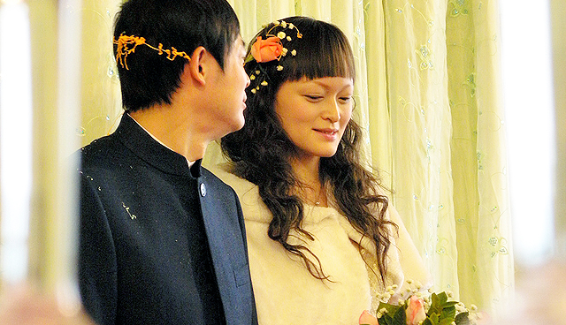

说写，马上就写了。 豆瓣去年流行一本书叫《怎么鉴别黄色歌曲》，随后黄色歌曲小组也建立起来，大家一窝蜂地举报黄色歌曲。当中其实许多是网友YY的，如今的孩子早熟，知道的也多，不得不佩服一些人的想象力。按上面这本书介绍的黄色歌曲，广义上还包括向敌人谄媚，或者颓废，萎靡的音乐。像《菲靡靡之音》这种啊，如果出现在当年直接不用听肯定就被砍了。狭义上的黄色歌曲，就是指表现情欲主题的了。 我回想自己听过的中文歌曲，香港有过一些歌曲是表达夜生活，或者舞厅文化，放纵等等，但这些大都还是比较避讳，也就是一些多情公子之类，远达不到黄色歌曲的地步，主流媒体还是能播的。而能称黄色歌曲的，大概属黄耀明在人山人海里做的一些。但细想人山人海中的那些歌其实也不黄色，歌词写得唯美婉约，不大直接。你往别的方面想来唱也没什么问题。其中心思想不过是让大家放开束缚，莫待无花空折枝。当最近我开始整理老歌的时候，再次想起了一个人。 其实当前几年我知道有搜索引擎这个东西的时候，就已经慢慢开始找回这个人——刘美君。原来在我小学的时候，就已经接近了黄色歌曲。我从那时记到现在的一首歌是刘美君的《一双旧皮鞋》，歌曲讲述了一个爸爸在街上帮人补鞋谋生，供养女儿。女儿感激亲恩，希望有待一日能够报答父亲的故事。按理说这歌应该和《真的爱你》这种一样，得到大家传唱。这是多有教育意义的一个故事嘛。而事实并非如此，因为我依稀记得小时候看的电视，这个歌的MV，这个女儿是一位站街女，有个镜头是她在街角远望父亲。如果你不了解这些，单看歌词，这歌的确也能过关。 刘美君最早的一首所谓情欲歌曲是《午夜情》，虽然是在相对开放的香港，但这样的题材还是被认为大胆。还好这个歌当时是作为一部电影的歌曲，似乎有一个避嫌的理由。但以下刘美君的原话，让我对这个同是射手座的女人添了几分喜爱——“当时大家觉得我很大胆，我却想告诉大家，这算大胆了吗？更大胆我都行”。于是刘美君毫不避嫌地推出了《赤裸感觉》等一系列黄色歌曲，基本都是讲述欢场女子的心声，俨然一个为这些女子说话的形象。在八十年代末，九十年代初的香港，她走这种偏风的勇气真让人佩服。想想现在阿娇这样的事，被整得多惨，又要哭又要道歉地，才能回到屏幕前。 今天看的《志云饭局》刘美君一期，解答了我心中的一个疑问。刘美君说当时作这些歌的主意，是她提的。她看到许多英文歌都能写这样的题材，为什么中文歌没人敢写。一位敢做敢为的人。最近两年，香港拍了两部《性工作者十日谈》，希望大家给予这个职业更客观的一个看法时，自然而然地躲不过刘美君这样一个人，她是先驱。第一部只用了她的歌，第二部她更是亲自上阵了。 到底她的歌有多黄呢，最近的重温让我有时间仔细看看每一首的歌词，下面送上一首最为直接赤裸的，小朋友不要看着我们是卡通头像就乱点来听。这首歌情节和歌词都适合也许也已经出现在了黄色小电影里。（听不懂粤语的直接点过去看歌词，链接） 刘美君成名早，淡出也早。不好的方面是我老觉得她是比四大天王那一辈老的，好的方面是看到了阔别那么多年的她，竟然还是很有气质和漂亮，非常惊喜。刘美君年轻时乐于追求名牌，挥霍购物，在美国疗伤的时候开始看老子，孔子，道，佛教等书，按她自己的说法是内心的空虚已经被填补上，所以不再需要那些物质上的填补了。一个唱黄色歌曲的人，也可以是这样。所谓黄色歌曲不黄色歌曲，在于你是不是戴有色眼镜罢了。
还有人听粤语老歌吗
这几天边干活边在虾米听歌，如果随机地乱听，或者按虾米电台听，是非常不靠谱的事，实在每首歌差得太远。而我又没时间在烂歌泛滥的新专辑里刨一些好点的歌。后来我计划开始贝海拾珠，把一些喜欢的老歌翻出来，收藏一下。于是我开始按歌手从早期专辑开始过。出身的原因，所以我还是过粤语歌为先。 这些歌如今已经很少人听了，歌词更是少人去看了。但慢慢听这些老歌的过程中，除了勾起自己的怀旧情绪外，我还发现许多歌不但没有过时感，而且歌词也有很多是非常有意思的。在那个年代，徐小凤这样的人物在演唱会上还都是称自己“歌手”，而现在会唱几句歌，会弹几手吉他的人都称自己是“音乐人”。那个年代虽然没那么多音乐人，不过还是有很多才华横溢的人和经典的歌曲。 从听流行开始，再到摇滚，再到各种风格的音乐，再听回流行。我实在觉得不管是哪一种类型的音乐，都不能直接反映其质量的优劣。有些听摇滚的，会看不起听流行的。这是典型的一杆子打死一船人。音乐听多了，是应该让自己变得更宽容，也更有利于在某种音乐里找到精品和亮点。 这几天听到一些歌，非常有兴致想写点什么。写的东西也许是自己以前听这些歌的时候忽略的，没想到的，或者网上讨论较少的。但会比较零散，不成系统，而且是没那么多人听的粤语老歌，到底要不要写呢？写了一些内容的话，网站会不会有被低俗的危险呢？我再想想。 （PS：昨天和晓禾在家聊天也说到这些，我对于粤语填的歌词感到越来越喜欢，对于能填好粤语词的一些填词人，象林夕这样的大牛，欣赏又增添了不少）
老了还要看童话
今年等着要看的电影《Where The Wild Things Are》，前段时间太忙，就忘了贴了，现在补上。话说美国新总统奥巴马在白宫也给小孩子们念的这本书。 当时看了这个预告片，便迫不及待地标了想看。歌曲来自加拿大独立摇滚乐队Arcade Fire的《Wake Up》。 《野兽家园》改编自美国第一位获得过安徒生插画奖的儿童插图画家、被称为“童画界的毕加索”、“图画书创始以来最伟大的创作者”——莫里斯·桑达克（Maurice Sendak）自写自画的同名作品。故事讲述了小男孩马克斯被妈妈惩罚，关在卧室中、不许吃晚餐，躺在床上的马克斯却凭借幻想在他的头脑中建立起一个神秘的国度。那里有茂密的森林和海洋，还居住着高大、长着角的毛茸茸怪物，前去冒险的马克斯并不害怕他们，他用“注视着他们黄色的眼睛一眨都不眨”的方法征服了他们，成为了“野兽国度”的国王。然而不久之后马克斯就觉得孤独、开始想家，等他回去时发现晚餐摆在桌子上等他，还是热的。
改版基本完成
我很久没有写博客了，一直在设计制作新版的博客，就是现在所看到的这款。我的性格总是喜欢把一件事落实得差不多了，才能把心思抽出来想别的，干别的。不喜欢同一时间想着很多件事，所以只有博客差不多改好了，我才愿意坐下来写写日志。这次改版比上次进步很多，我基本能搞懂Wordpress里面的那些Tag的调用了，自己好像经常都是后知后觉，现在看着这些都不难，当年怎么就看不懂呢。 在改版的这段时间里，我看到网上关于博客将死的一些议论，大家都未来技术的展望。博客风风火火的日子的确开始慢慢过去了，在这个潮流下，我还花那么多时间精力去改版似乎划不过来。我思考过我们写博客的目的到底是什么。我知道很多人开博客是为了让自己发出更大的声音，希望更多的人听到或关注到。但我们似乎不是，虽然曾经也会投人们所好去转载一些内容，或是影响自己写日志的方式和语气。 有时候翻看好几年前，博客还没那么火的时候，自己在Space上写的日志，会很满足于当时的那种心态。基本都是半夜，自己写给自己的像是日记的东西。也没想过有没有人看，有没有人喜欢。我想对于这样一种心态和行为，博客已死的论题似乎没有什么意义。新版博客的设计，我把很多五花八门的功能都去了，不需要什么社会网络服务，不需要什么互动起来。这样做出来和我们内心想要的东西更加相配。 我想这次应该是最后一次大改了，我希望更多的时间是让自己享受写博客的这个过程。并且心中一直还有个事没做，总是牵挂着放不下，那就是我们的网站。很多人认为博客就可以相当于网站了，不过我这个古老的思想还是把这两者分得很开，我还是要做一个自己满意的网站。 还有我的FLASH，很久没学了，是该把时间转过来了。我的FLASH一直都是半桶水的水平，并且我现在工作的内容和它没什么关系，为什么还要坚持学呢？我想现在很多的学习，都是为了一种回报，比如找到更好的工作，有更好的报酬。但FLASH对我来说，它不属于以上情况，是我真正喜欢的一个事情。我想不是做什么事都考虑回报才行的，应该经常问问自己，到底自己有什么真正喜欢的，有没有为之努力过。也许很久以后我的FLASH还是一般，不过没什么亏的。 之前我听说过一个老外50多岁的女人，在网上找人学习FLASH的故事，这个事情如何去解释呢？在这个基本都是利益驱动行为的社会，还真有些事不是利益关系所能解释的，听起来好像非常的理想主义。但愿今后我们能更明确生活的方向，跟随自己的内心。 博客改版是自己喜欢做的事情；改版完成后，更多的时间，也还是应该用于自己真正喜欢的事情上 ：）
晓禾依树电台第一期
此电台节目已转移：http://www.coletree.com/podcast/2009/04/22/ 歌曲列表： 1.I’m Talking Facts Not Shit——The Boats 2.Ugla——Amiina 3.Prelude For Time Feelers——Eluvium 4.Simon’s Ride——Fred Avril/Xavier Jamaux 5.明星——叶德娴 http://www.coletree.com/radio/coletree_radio_001.mp3
001 风入森林
三月就要过去了，北京还像冬天一样冷。天气预报说，今天有雨夹雪，可能是太干了，还没有下起来。外面一片灰暗，这样的天气，哪里都不想去，只想待在家，上上网，听听音乐。过去我们都是在博客上分享自己喜欢的音乐，后来想，为什么不穿插在里面说点什么呢？每期节目都是一个树洞，记录下自己的生活，或者说说我们听过的音乐，看过的电影，读过的书和他们背后的故事。波兰诗人米沃什有首诗里写：“我只想成为一棵树，为岁月而生长，不伤害任何人”。这也是我们如此喜欢树的原因，那就叫两棵树的森林电台吧。从今天开始我们的电台。 [embed]http://www.coletree.com/radio/coletree\_radio\_001.mp3\[/embed\]
日落而息
 因为地球一小时活动，我们早早就睡了，一觉睡到大天亮，算是超额完成了活动任务。想古人不正是这样日出而作，日落而息，在电灯发明以前，也不大会因熬夜而生诸多疾患。其实这样的环保活动，最该参与的是那些富人，而不是像我们这样没车没房，租来的屋里只有一盏节能灯的普通人。还好，晚上8点半经过三环边一座光鲜亮丽的摩天大楼时，亲眼目睹了它熄灯的一瞬，算是欣慰。不过，一直觉得，像这样的大楼，在这座城市随处可见，真的有必要在平时下班后和周末晚上都一直亮着所有的灯么？如果只是为了这个活动而熄掉一小时，那又有什么意义？
因为地球一小时活动，我们早早就睡了，一觉睡到大天亮，算是超额完成了活动任务。想古人不正是这样日出而作，日落而息，在电灯发明以前，也不大会因熬夜而生诸多疾患。其实这样的环保活动，最该参与的是那些富人，而不是像我们这样没车没房，租来的屋里只有一盏节能灯的普通人。还好，晚上8点半经过三环边一座光鲜亮丽的摩天大楼时，亲眼目睹了它熄灯的一瞬，算是欣慰。不过，一直觉得，像这样的大楼，在这座城市随处可见，真的有必要在平时下班后和周末晚上都一直亮着所有的灯么？如果只是为了这个活动而熄掉一小时，那又有什么意义？
世界是冷的，血是热的
不知道是不是美剧《真爱如血》引发了新一轮吸血鬼潮流，最近在荧幕上露脸的吸血鬼还真不少。最近两个礼拜就陆陆续续看了三部吸血鬼电影——《狼族崛起》，《Twilight》，《生人勿近》。 看吸血鬼电影有个标配，那就是得看高清的，最低得是AVI格式，推荐MKV格式，要是看RMVB，那还不如不看。 前两部基本上就是看画面了。作为《黑夜传说》的前传，《狼族崛起》延续了一贯的哥特风格，黑暗，冷酷，故事乏善可陈，这种情况下，如果看的是RMVB，又碰巧是枪版的话，你就会只见一团团黑呼呼的物体在屏幕上晃动，配上阵阵野兽的嚎叫，却不知其所以然，这就是我看《黑夜传说》第一部的经历。 没看之前，我一度把《Twilight》跟《微光城市》弄混，不管怎么说，twilight这个词所传达的那种微妙情绪还是挺有诱惑力的，直到男主角的出场，我才知道自己被骗了。整部戏就是美国高中生校园偶像剧，几个主角白得让人发怵，而那个被很多女生花痴的男主角，我咋就觉得怎么看怎么难受呢？总觉得他鼻子是歪的，难道是错觉。为了吻合青春偶像片的定位，我们的吸血鬼在太阳下尽然变成了“钻石钻石亮晶晶”，而且他们还是吸血鬼中的素食主义者——只吃动物血。不太清楚《真爱如血》是不是也是差不多的主题，如果是的话……好吧，我承认它还是有市场的，只是我不属于目标受众而已。 比较起来，《生人勿近》既没有像《狼族崛起》那样以黑暗为唯一卖点，也没有像《Twilight》那样只是将传统的青春剧包装了一层吸血鬼外壳。它的寒冷与我们的认知没有疏离感，只是以极其自然甚至缓慢渗透的姿态，呈现出北欧一片白茫茫的雪雾，让我在已经过分温暖的北京初春感觉到一阵阵彻骨的凉意。被同学欺侮的孩子，父母离异，跟着同性恋父亲生活，世界于他就如漫长的北欧冬季一般毫无生机，直到吸血鬼女孩的出现，替他报仇，甚至残忍地肢解了欺负他的混混。她甚至不是真正的女孩，他却愿意跟随她，即便是做她的棋子，而我们宁肯相信，这样的结局是最好的，因为在寒冷的世界里，哪怕是一点点的温暖都是奢侈品。而他从她那儿找到了温暖，她也需要他的陪伴，这就够了。
《换子疑云》——想起来一个名字
不知是哪个白痴翻译把这部电影译成了《调包婴儿》，害我在故事开始后很长一段时间都在琢磨是不是这个小男孩本来就不是她儿子，是不是他一出生就被调包了。一边瞎琢磨，一边骂这个母亲太软弱，一边又以时代不同，妇女地位不同来安慰自己有点不耐烦的情绪。直到她被强制送进精神病院，我才恍然大悟，同时猛地想起来一个名字——刘亚玲。 知道这个名字的人，想必看这部电影都会想起它她。同样是一位母亲，同样是强制治疗，同样是权力的黑暗勾当，同样是失去儿子后的痛苦。不同的，是1928年的她还有教会、媒体、法院、民间律师的有力支持，让她最终告倒了LA警察局，赢得了尊重和正义；而2008年的她，却只能无力地忍受改名的屈辱和暗无天日的隔离。这当中的距离，又岂止是80年这么漫长。 从无聊到压抑再到震撼再到释然，如果就电影本身而言，这部电影似乎并没有太多值得称赞的地方，安吉丽娜朱莉的表演，也没有让我觉得她演技有多大提升。但仅仅因为真实，仅仅因为它讲述的这个看似遥远其实就发生在我们身后的故事，都值得我们对导演克林特老头子表达最深的敬意。
勤子
 春节回家，正好赶上勤子和Namu的婚礼，简单温暖，像一场舒服的聚会，质朴一如他们本人。 勤子和我是高中好友，大学时渐渐失去联络，再次联系上，竟然是因为她在豆瓣上看到小树的Beyond评论，才跑到我们网站，那之前她根本不知道小树是我男友。所谓缘分，也就是这样了吧。 勤子和Namu是标准驴友，从他们的结婚相册就能看出来，每一张都是两人旅行的记录，配上自己写的或是海子那样前辈驴友的小诗，是我见过最诚恳最贴切的一本结婚相册。一直很羡慕他们的生活方式，想要去到什么地方，收拾好行李，简简单单就上路了。旅程不在于吃得多好，住得多舒适，只在于行走本身，置身于一路风景中的原始体验。 勤子经常身披马甲来我们博客留言，为我们博客增添几分生气，非常感激。在此特别祝福他们，希望他们一直这样相伴行走一辈子。